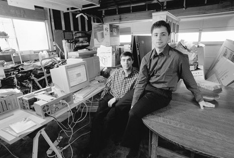
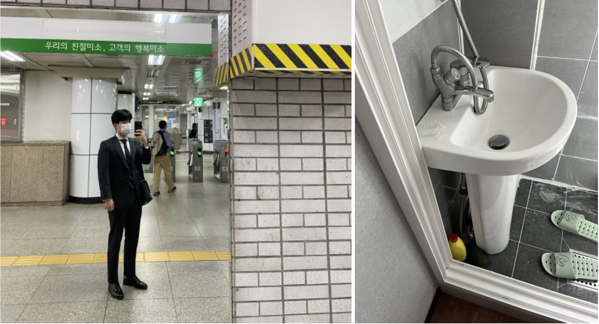
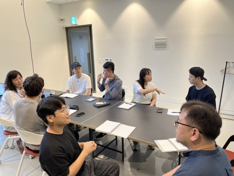
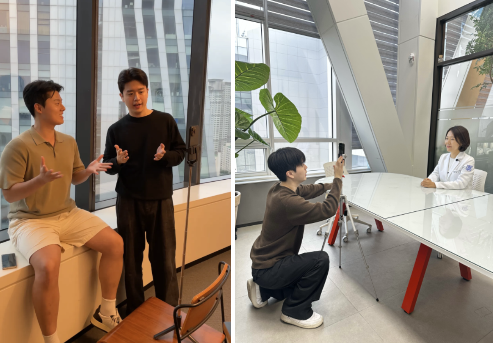
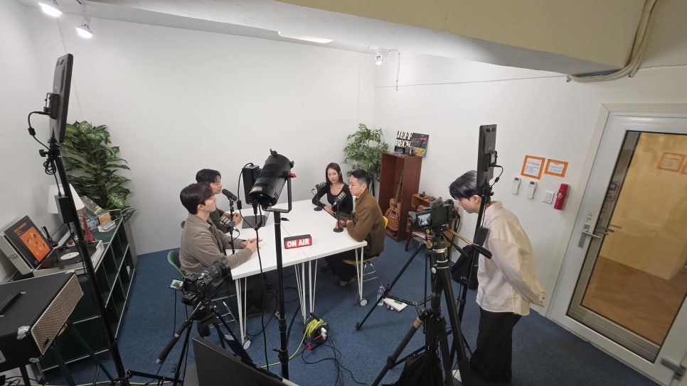

성과
OUR BUSINESS JOURNEY
안녕하세요, 투피스에이전시입니다

창업은 특별한 재능이 있거나 거대한 사명을 가진 사람만 할 수 있는 일이라고 생각했습니다. 하지만 지금 돌아보면, 저희 역시 대단한 준비가 되어 있어서가 아니라 처한 환경 때문에 사업을 시작하게 되었습니다. 회사와 가족의 사업이 어려워졌고, 당장 할 수 있는 일이 콘텐츠를 만드는 것뿐이었기 때문입니다.

저희의 시작은 중국에서 보낸 학창 시절과, 부모님의 사업이 어려워지며 직접 학비를 벌어야 했던 경험으로 거슬러 올라갑니다. 이후 급하게 취업해 고시원에서 생활하며 남들이 좋다고 하는 일을 따라갔지만, 저희만의 기준과 원칙은 없었습니다. 일이 잘못되면 남을 탓했고, 재정과 인간관계 모두 제대로 쌓이지 않으면서 삶의 많은 부분이 흔들리고 있었습니다.

그러던 중 비즈니스 컨설팅 회사에서 일하게 되며 다양한 사업가들을 가까이에서 만났습니다. 비슷한 나이에도 자신의 사업에 온전히 몰입하고, 필요한 것을 배우고 바로 실행하는 사람들을 보면서 환경과 간절함의 중요성을 처음으로 깨달았습니다. 이후 여러 커뮤니티와 사업을 시도하며 실패도 반복했지만, 그 과정에서 저희가 어떤 일을 오래 붙잡고 성장할 수 있는지 조금씩 알아가기 시작했습니다.

회사의 상황이 어려워졌을 때, 저희는 회사를 알리고 문제를 해결하기 위해 콘텐츠를 만들기 시작했습니다. 처음에는 잘해서도, 좋아해서도 아니었습니다. 그저 지금 할 수 있는 일을 찾아 실행했을 뿐입니다. 하지만 콘텐츠를 기획하고 만들고 사람들에게 전달하는 과정을 거치며, 누군가에게 필요한 존재가 될 수 있다는 것을 처음 느꼈고, 그때부터 어떤 일을 해야 하는지 진지하게 고민하기 시작했습니다.

저희는 좋아하는 일이나 잘하는 일을 처음부터 알고 시작해야 한다고 생각하지 않습니다. 때로는 처한 환경이 기회를 만들고, 그 기회를 붙잡아 반복해서 실행하는 과정에서 꿈과 사명이 생기기도 합니다. 투피스에이전시는 아직 자신의 강점과 방향을 완전히 찾지 못했지만, 가진 것을 세상에 드러내고 앞으로 나아가고 싶은 사람들과 함께하려 합니다.